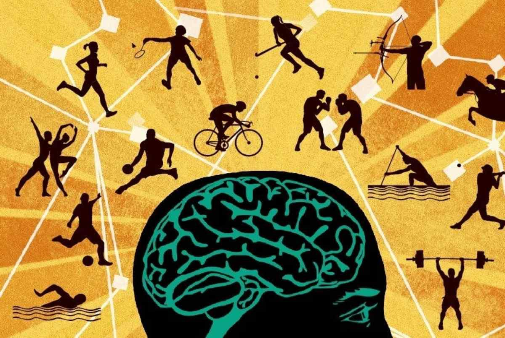

How are sports and psychology related?
Sport is something that forces a person to push himself beyond his limits. It is an act of self-improvement that develops his willpower. Sport allows one to prove themselves, to bring out their abilities. And psychology helps athletes find themselves, feel and form their goals, form their motivation and priorities. In everyday life, many people's lifestyle lacks physical activity, which leads to not very good consequences: constant fatigue, lethargy, lack of energy and strength. Excessive mental stress for a person is much more dangerous than physical stress, because it has a strong impact on the psyche and is often the cause of emotional overload and burnout. As we know, stress is "psychological and behavioral reactions reflecting a state of inner anxiety or its suppression. But during intense physical training, the body produces endorphins, which cause a feeling of happiness and euphoria. After doing sports people not only part with negative emotions, but also begin to think about the good.Also doing sports is one of the best ways to combat insomnia, because after getting some kind of load a person begins to feel some fatigue in the body and his body just needs rest. Physical activity has a beneficial effect on psychological processes, helps to relieve emotional and mental stress. Exercise helps to get rid of anxiety, set thoughts in the right order, often leading out of a depressive state, as a result and disappear signs of stressful behavior
